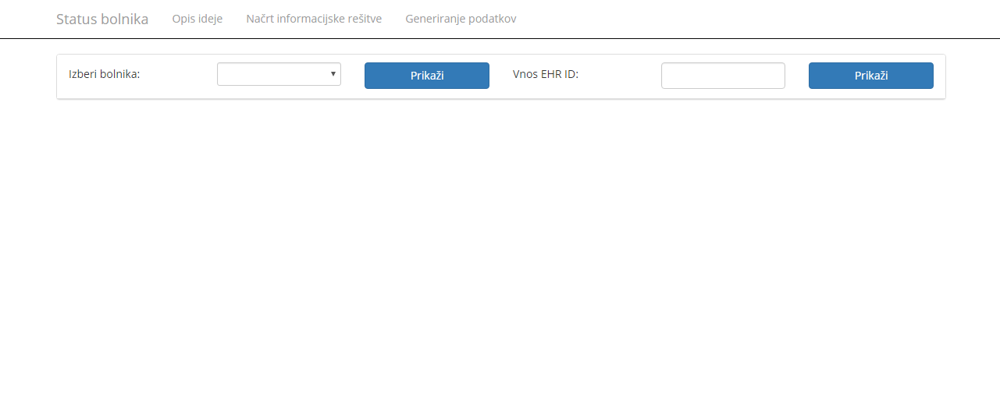
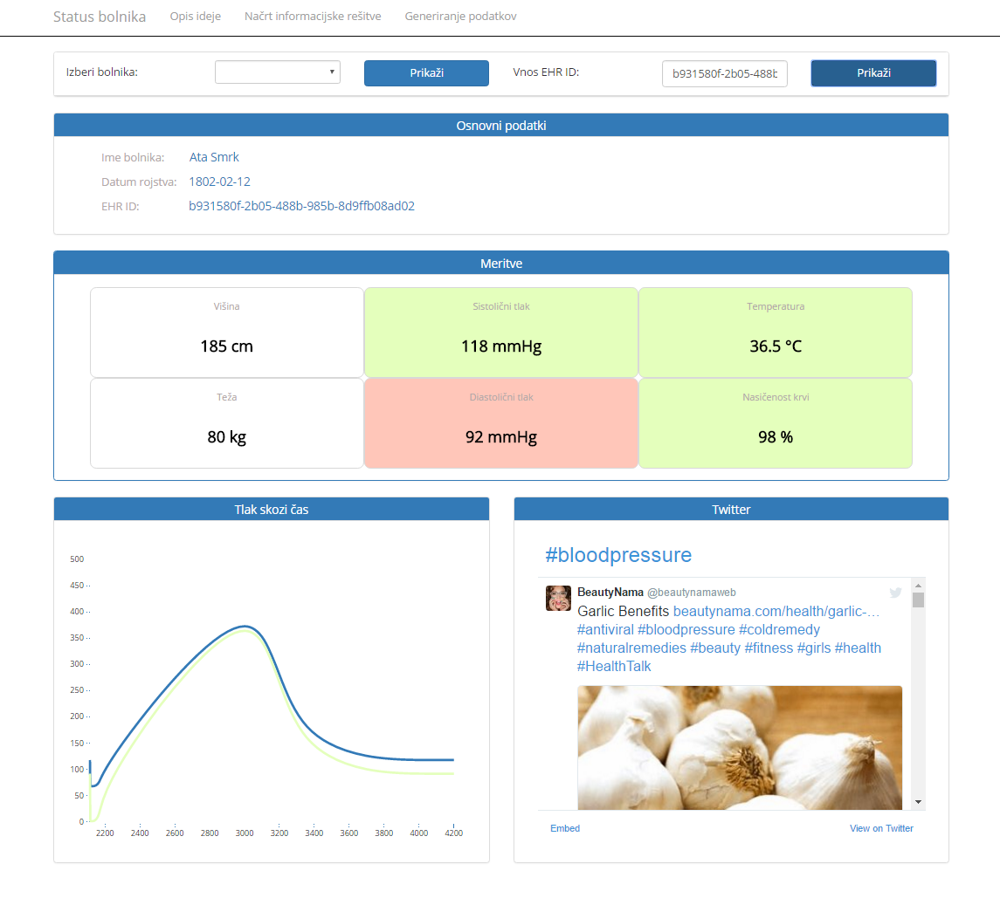

Namen aplikacije je, da uporabnik hitro na podlagi barv vidi, kako dobri so njegovi vitalni znaki.
Legenda barv:
- zelena: meritev je idealna
- rumena: meritev je srednje dobra
- rdeča: meritev je slaba
Grafično so prikazane meritve krvnega tlaka skozi čas. Poleg grafa pa je še Twitter feed, kjer uporabnik lahko dobi splošne informacije in napotke, kako izboljšati svoj krvni tlak. Zvišan krvni tlak je namreč ena izmed bolj pogostih obolenj 'modernega' človeka.
Za prikaz Twitter feeda sem uporabil kar njihovo Embedded Timelines orodje, ki generira željen widget za JavaScript.
Za določanje barv meritev sem uporabil več 'statičnih' virov: za tlak, za kisik in za temperaturo.
Master

Detail

Ob pritisku na gumb 'Prikaži' se na podlagi vnešenega EHR prikaže status meritev bolnika, graf krvnega tlaka in Twitter feed o krvnem tlaku.
Za prikaz meritev krvnega tlaka sem uporabil 'navaden' graf (d3.js, Line Chart), ker je za enostaven prikaz dveh linij najbolj primeren.